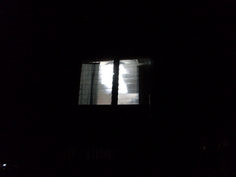
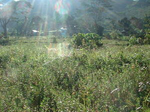

layag  
/layag/
adj_rt.
“bright”
n.
light
layag te bulan
moon+light
Eng. light
Tag. liwánag
Ceb. kahayag
Ilo.: raniág
OCM: Ethnophysics (822)
Online dict status: -
Usage level: M
adj.
(malayag, mA1-) bright or shining
Malayag ka siyudad minsan marusilem su masalig ka sulù.
The city is bright even the night for it has many light.
Ant. meelung
Ant. dalungan
Syn. aldawan
Eng. bright; shining; brilliant; radiant; sunny
Tag. maliwánag
OCM: Sensation and Perception (151), Ethnophysics (822)
DDP: Sun (1.1.1)
Online dict status: -
Usage level: B
v.
for a light (eglayag, miglayag/inlayag/piglayag, layag, agent, eg><ø-) to shine or glow on something (eglayahan, miglayahan/inlayahan/piglayahan, layahi, location, eg><an-)
Kenè eglayag ka bulan ke maaldew su marusilem dè iya.
The moon cannot shine if day time but night only.
Eng. shine; glow; illuminate
Online dict status: -
Usage level: M
v.
for the light (egkalayahan, nalayahan/kalayahan, agent, egkA><an-) to light something
Eng. light; shine; illuminate
Online dict status: -
Usage level: M
adj.
(kalayahan, kA><an-) sunny
Kalayahan te aldew ka intiru ne inged piru kenè egpeg-iling ka keinit te tagsè nasud.
Eng. sunny
DDP: Sun (1.1.1)
Online dict status: -
Usage level: R
Updated by: RJH,RJH,AAA,AAA,NJK,RJH,QDL,RAA,RJH
Last updated: 16/Nov/2015
"migmalayag" in song "Mateles ne marusilem"
"eglayag" in song "Mateles si Hisus"
"Nalayahan" in song "Diye te krus"
This page last updated: 03-Jan-2020
Copyright © 2009-2014, Matigsalug Language Christian Association, Inc